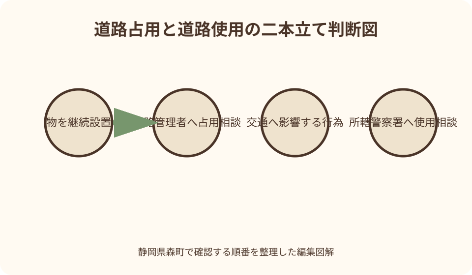
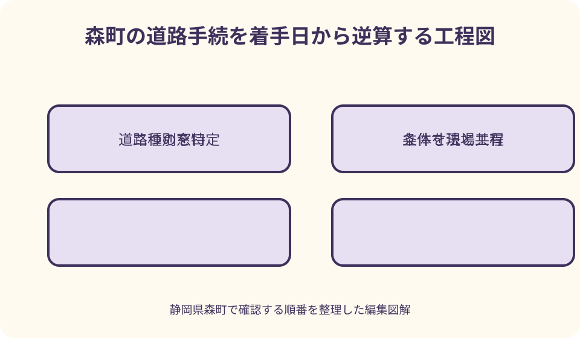

交通・外出・生活動線｜最終確認 2026-08-10
静岡県森町の道路占用・道路使用｜町道と県道、警察への申請を整理
道路へ物を置く計画では、道路管理者が審査する道路占用と、警察署長が審査する道路使用を混同しないことが出発点です。静岡県森町の申請書一覧には占用、承認工事、通行規制、道路使用に関する書類が並びますが、書類が同じページにあるから同じ許可という意味ではありません。場所、目的物、作業方法、期間、通行への影響を図面にして、着手前に関係窓口へ確認するための実用順を整理します。

編集イラスト最初に分ける二本の申請線
道路占用は、道路に工作物、物件または施設を設け、道路空間を継続して使うときに道路管理者へ求める許可です。国土交通省は道路法第三十二条に基づく制度として、看板、工事用囲い、足場、材料置場などを例示しています。
道路使用は、道路で工事や作業をしたり、交通への支障を生じ得る行為をしたりするときに、道路交通法第七十七条に基づいて所轄警察署長へ求める許可です。申請先の組織も、審査する観点も道路占用とは異なります。
たとえば建物改修の足場を歩道へ一定期間設置し、その組立作業で通行帯を狭める計画なら、足場の占用と作業時の道路使用の双方が関係し得ます。片方の申請をした事実だけで、もう片方が不要とは判断できません。
静岡県警は、道路使用許可と道路占用許可の両方が必要な場合、所轄警察署または道路管理者のいずれかへ両申請を一括して提出できる旨を案内しています。これは提出窓口の利便措置であり、許可の根拠や審査が統合されるという説明ではありません。
まず現地の道路管理者を特定する
相談前に必要なのは、住所だけでなく、物を置く位置と作業する範囲がどの道路に掛かるかを確かめることです。同じ交差点でも、接続する道路ごとに管理者が違う場合があり、近くの公共施設を管理する役所が道路も管理するとは限りません。
森町が管理する町道であれば、町公式の申請書ページにある道路占用許可申請書や一時占用願、道路承認工事申請書などが検討の入口です。ただし、様式をダウンロードできたことは、その計画が許可対象になるとの回答ではありません。
県道は静岡県の道路管理窓口へ確認します。森町公式の関係窓口一覧でも、町道は森町建設課、県道は静岡県袋井土木事務所というように、管理者を分けて案内しています。道路名や路線番号、現地写真を用意すると照合しやすくなります。
国道や高速道路、法定外道路、私道が絡む場所では、町道・県道の二択にしないことが重要です。地図アプリの色分けや通称だけで決めず、対象位置を示した図を道路管理窓口へ見せて、所管を確定してから申請書を選びます。
道路占用が扱う物と空間
占用の対象は路面だけではありません。上空へ張り出す看板や足場、地下へ埋設する管路など、道路区域の上空・地下を継続して使う計画も確認対象になり得ます。敷地境界内の支柱であっても、表示板が道路上空へ出るなら位置関係を図示します。
国土交通省は、占用できる物件が法令上定められ、道路外に余地がなくやむを得ないこと、場所・構造などの基準に適合することを許可基準として説明しています。便利だから道路へ置く、という理由だけで可否を見込むことはできません。
設置期間が短い物でも、道路空間を使うなら確認を省かない方が安全です。森町の申請書一覧には一時占用願もありますが、短期なら自動的に許可不要という説明ではありません。設置物、開始・撤去日時、固定方法を伝えます。
占用許可には条件、期間、占用料、原状回復などが関係する可能性があります。金額や期間を過去案件から流用せず、今回の物件の寸法、数量、用途、期間を申請先へ示し、通知内容を着手担当者まで共有します。
道路使用が扱う作業と交通への影響
警察庁は道路使用許可の対象として、道路での工事・作業、石碑や広告板などの設置、露店、祭礼行事やロケーションなど都道府県の規則で定める行為を挙げています。行為の名称だけでなく、交通への影響を具体的に伝える必要があります。
道路使用の相談では、作業車をどこに置くか、歩行者と自転車をどこへ通すか、車線を狭めるか、誘導員をどこへ配置するかが重要です。建築工事の契約書だけでは、道路上の安全措置を説明する図面になりません。
短時間の荷下ろしでも、停車位置や機材の張り出し方によって交通上の論点は変わります。『数分だから大丈夫』と現場で決めず、予定日時、車種、作業半径、必要な通行幅を整理して所轄警察署へ確認します。
警察署長が許可する基準は法令に基づき、申請すれば必ず認められるものではありません。交通への妨害や危険が生じない方法へ変更できるか、条件を付して実施可能かも含めて審査されるため、代替案を準備しておきます。
町道と県道で変わる相談先
森町内の町道については、町建設課管理係の申請書ページを起点にします。道路占用だけでなく、法定外道路占用、道路承認工事、着手届・完了届、道路通行規制・制限依頼書などが分かれているため、目的に合う書類を窓口で確認します。
県道を使う場合は、静岡県の道路管理窓口が占用側の相談先です。県の道路占用申請ページには道路法第三十二条・第三十五条関係の様式が掲示されていますが、森町へ提出する町道用書類と同じ提出先ではありません。
一方、道路使用の申請先は道路管理者ではなく、その場所を管轄する警察署です。町道だから森町だけ、県道だから県だけへ相談すれば完結するとは限らず、交通への影響がある計画では警察側の確認線も残ります。
路線の境目や交差点付近では、申請範囲を一枚の位置図に落とし、管理区分を色分けすると相談が進みます。管理者が複数なら、誰が全体調整を担当するかを施工者・主催者側でも決め、回答を別々のメモにしません。

道路工事では承認工事も切り分ける
道路へ物を置く占用とは別に、歩道の切下げ、側溝の改変、乗入口の造成など、道路そのものへ工事を行う計画では道路法第二十四条の承認工事が関係し得ます。森町は道路承認工事申請書と着手届・完了届を別様式で掲示しています。
店舗や住宅へ車を入れたいという目的でも、縁石を勝手に外したり、側溝へ独自の蓋を掛けたりしてよいとは限りません。構造、安全、排水、費用負担、復旧方法を道路管理者が確認できる断面図や施工図を用意します。
承認工事の施工中に車線や歩道を使うなら、警察への道路使用や通行規制の調整が別に発生する可能性があります。工事承認を受けたことを交通規制の了承と読み替えず、工程表の各日に必要な手続を対応させます。
工事後も、完了届、検査、占用物の管理、路面復旧などの役割が残り得ます。許可証や承認書に記載された条件を現場責任者が読み、下請けや誘導員へも、道路区域と私有地の境を含めて伝えます。
看板は支柱と表示面を立体で描く
沿道看板では、支柱が民有地にあっても、表示面や照明が道路上空へ張り出すことがあります。平面図だけでなく、道路境界からの離れ、下端の高さ、張出し幅、固定部分が分かる立面図・断面図を作ると論点が明確です。
仮設案内板、のぼり旗、工事看板も、置き方や期間により扱いが変わります。風で倒れた場合の危険、交差点や標識の見通し、歩行者有効幅を確かめ、敷地内へ収める代案を先に検討します。
広告物には道路関係の手続以外のルールが関係する場合もあります。道路占用の許可が得られたと仮定して、他の法令や土地所有者の承諾まで満たしたことにはならないため、確認事項を一つの許可名にまとめません。
既設看板を交換する場合も、寸法、位置、所有者、期間の変更が許可条件へ影響し得ます。古い許可書があれば番号と図面を持参し、更新・変更・新規のどれに当たるかを道路管理者へ尋ねます。
足場・囲い・材料置場は工程別に見る
外壁工事の足場は、完成時の位置だけでなく、搬入、組立、使用、解体、搬出の各段階で道路への影響が違います。トラックが道路に停まる時間、部材を振る範囲、作業員の動線まで工程ごとに図へ落とします。
工事用囲いや仮囲いは、歩行者から運転者が見えにくくなる死角をつくることがあります。出入口付近では、見通し、夜間表示、転倒防止、誘導方法を示し、道路管理者と警察の指示が食い違わないよう回答を共有します。
材料を一時的に置くだけでも、点字ブロック、側溝、消火栓、標識、バス停などを塞がない確認が必要です。現地写真へ設備を記入し、必要幅を確保できなければ敷地内仮置きや小分け搬入へ切り替えます。
天候で工期がずれたとき、許可期間を当然に延ばせるとは限りません。延期の可能性が見えた段階で、占用期間、道路使用日、規制依頼、近隣周知のどれを変更するか、各窓口へ確認します。
催事・祭礼・露店では主催者が全体図を持つ
地域行事で道路を使う場合、山車や行列、露店、受付、観客、救護、搬入車を別々に考えるだけでは足りません。同じ時間帯にどこへ集中するかを会場図と時間割で重ね、緊急車両の経路も確認します。
祭礼やイベントは道路使用許可の対象になり得ますが、催しの伝統や公益性があれば自動的に許可されるわけではありません。開催日時、経路、参加規模、交通整理、安全責任者を当年計画で示します。
露店や装飾物を道路へ継続して設けるなら、道路使用に加えて占用の確認が必要になる場合があります。出店者ごとに任せきりにせず、主催者が設置物一覧、寸法、火気、電源、撤去時刻を集約します。
中止や縮小の基準も申請準備に含めます。雨天、強風、道路の災害規制、誘導員不足が起きたとき、誰が決定して警察・管理者・出店者へ連絡するかを事前に決めておきます。
申請図面は五つの情報を重ねる
第一は位置です。住宅地図だけでなく、路線、交差点、目標物、道路の左右が分かる位置図を用意します。申請場所が長い場合は起点・終点を示し、現地で担当者が同じ場所を特定できる表現にします。
第二は寸法です。道路全幅、歩道幅、設置物の幅と高さ、道路境界からの距離、作業車の外形を同じ尺度で記します。『端に寄せる』ではなく、通行に残る実寸を読めるようにします。
第三は時間です。準備、規制開始、作業、休止、撤去、規制解除を時系列にします。複数日なら毎日同じ配置か、夜間に物を残すかも明示し、占用期間と実作業時間を混同しません。
第四は安全措置、第五は責任体制です。誘導員、標識、照明、迂回、歩行者動線と、現場責任者・緊急連絡先を記します。許可条件を受けて修正できるよう、元図の版番号と更新日も残します。
着手日から逆算して相談する
相談は工事や催事の直前ではなく、場所と概略方法が決まった段階から始めます。図面修正、複数管理者との調整、近隣周知が必要になる可能性を見込み、見積書やチラシへ確定前の日程を書き切らないようにします。
最初の連絡では、対象道路、目的、設置物または行為、希望期間、通行への影響を簡潔に伝えます。『何を出せばよいか』だけでなく、占用、使用、承認工事、通行規制のどれを確認すべきかを尋ねます。
申請後に補正を求められたら、回答期限と着手予定への影響を施工者・主催者へ戻します。許可前に資材を道路へ置いたり、規制予告を確定扱いで告知したりせず、実施可否は書面の内容で確認します。
許可証を受け取った後も、条件、期間、掲示方法、携帯書類、完了時の連絡を読みます。現場には最新版の図面を置き、申請時と配置が変わる場合は自己判断で動かさず担当窓口へ相談します。
通行規制と周知は許可とは別の仕事
森町の申請書一覧には道路通行規制・制限依頼書が掲示されています。これは占用許可や道路使用許可と同じ名称ではなく、工事等に伴う規制情報を扱う書類として、必要性や提出順を町の管理係へ確認します。
通行止めや片側交互通行を予定するなら、規制区間だけでなく、手前で安全に転回できる場所、沿道住宅への進入、通学・通勤時間、路線バスやごみ収集などへの影響を洗い出します。
近隣への案内文には、まだ許可が確定していない段階と、確定後の内容を混ぜません。実施日、予備日、規制方法、問い合わせ先を許可条件と照合し、変更時に差し替えられる配布計画にします。
ウェブ地図へ迂回路を一本描くだけでは、大型車、歩行者、自転車が同じ経路を使えるとは限りません。道路管理者や警察の確認を受け、生活道路へ過度に車を誘導しない代案を検討します。

良い点
占用と使用を最初に分ける良さは、誰が何を審査するかが見えることです。道路空間へ置く物と、交通へ影響する作業を別の列にすれば、必要な図面や日程を早い段階でそろえられます。
森町公式が占用、承認工事、通行規制、道路使用に関する書類を同じ入口で案内しているため、町道の工事計画で関連し得る書類を見渡せます。書類名の違いから、確認漏れを発見する手掛かりにもなります。
道路管理者と警察へ同じ現況図・工程表を示せば、異なる条件を一つの施工計画へ反映しやすくなります。各窓口向けに都合のよい別図を作らず、基礎図を共通化して修正履歴を残すのが実務的です。
早期相談は、道路外へ足場を組む、看板を敷地内へ移す、交通量の少ない時間へ作業を変えるといった代案を比較する時間を生みます。許可を得ることだけでなく、道路を使わない方法も選択肢になります。
注文したい点
申請書の一覧だけでは、個々の計画にどの手続が必要かを確定できません。利用者としては、設置物・作業・道路種別を入力すると、占用、使用、承認工事、規制の相談先候補が見える案内があると迷いを減らせます。
町道と県道の境界は、初めて現場を持つ人には分かりにくい部分です。地図で所管を確定できない場合の問い合わせ方法や、位置図へ何を記すかが申請書ページから直接たどれると準備しやすくなります。
道路使用と占用を一括提出できる案内は便利ですが、『一括提出』を『一つの許可』と誤読する余地があります。二つの審査、追加資料、連絡元が異なり得ることを、申請者側でも工程表に明記したいところです。
様式は更新される可能性があるため、保存した古いファイルを翌年そのまま使うのは避けます。提出前に公式ページの更新状況、提出部数、添付図面、押印や手数料等の現行条件を窓口へ確かめます。
許可が難しい場合の計画変更
道路上の幅を確保できないなら、足場形式を変える、私有地側へ寄せる、作業を分割する、別の搬入場所を使うといった案を施工者と比較します。無許可で実施することは代案になりません。
イベントで広い規制が難しい場合は、会場を道路外へ移す、時間を短縮する、行列経路を変える、観客区域を限定する案があります。伝統行事でも、安全確保と緊急経路を前提に当年の方法を調整します。
看板の張り出しが基準に合わない可能性があるなら、壁面内に収める、小型化する、自立看板を敷地内へ置く案を検討します。広告効果だけでなく、落下・転倒、見通し、維持管理を比較します。
希望日までに審査や関係調整が完了しない場合は、着手を延期し、契約先や近隣への連絡を更新します。申請中であることを許可済みと扱わず、実施判断を誰が書面で確認するかを決めます。
代案・結論
結論は、現場を町道か県道かで分け、設置物の継続利用を道路占用、道路上の作業・催事を道路使用として別々に点検することです。工事内容によっては承認工事や通行規制も加わるため、着手前に全体図を示します。
第一の代案は、道路を使わず私有地内で完結させる方法です。第二は設置範囲や作業時間を縮める方法、第三は交通影響の少ない場所や日へ変更する方法で、どれも土地所有者や関係機関の確認を省けるとは限りません。
町道の入口は森町建設課管理係、県道の占用は県の道路管理窓口、道路使用は所轄警察署です。管理者が不明なら、位置図を示して所管確認から始め、たらい回しを避けるため確認日時と回答先を記録します。
許可の見込みや処理期間をこの記事から保証することはできません。対象物、場所、期間、交通量、安全措置によって判断が変わるため、契約や広報の確定前に一次情報と担当窓口へ戻るのが最短です。
許可後から撤去・完了までの記録
現場ファイルには、許可証・承認書、条件、申請図、工程表、連絡先、変更履歴をまとめます。道路管理者向けと警察向けを色分けしつつ、現場責任者が両方を同時に確認できる構成にします。
工事中は、設置物のずれ、路面の損傷、誘導方法、苦情や事故の有無を記録します。申請図と異なる状況が生じたら、危険を放置せず安全確保を優先し、その後の変更手順を担当窓口へ確認します。
撤去時には、足場や看板を外す作業自体が道路へ影響しないかを見直します。占用物をなくしただけで完了ではなく、路面や側溝の復旧、清掃、完了届・検査の要否まで条件書に沿って進めます。
終了後は、実施図、写真、許可番号、完了確認を案件名と場所で保管します。次回の参考にはなりますが、別の道路、別の期間、更新後の様式へそのまま転用せず、新しい計画として再確認します。
大石の視点
森町で不動産や店舗工事に関わる立場から見ると、敷地内の工事図だけで見積りを固めるのは危険です。道路境界、搬入経路、足場の張り出し、側溝や縁石を現地で確かめて初めて、道路手続の論点が見えます。
山間部では道路幅が限られ、迂回に時間を要する場所があります。町なかと同じ規制図を当てはめず、沿道の暮らし、通学、配送、救急の動線を読み、短時間でも地域への影響を小さくする方法を考えます。
土地売買や建物改修の前なら、『前の所有者も使っていた』という説明を許可の代わりにしません。既設の乗入口、看板、配管がどの根拠で設けられ、名義や期間の手続が必要かを資料と窓口で確認します。
よい申請図は、役所へ出すためだけの紙ではありません。施工者、依頼主、警察、道路管理者、近隣が同じ現場を見て話す共通地図です。許可を取る作業と、事故なく終えて道路を戻す責任を一続きで考えます。
問い合わせ前の最終チェック
対象地点の住所、路線名または目印、道路境界、現況写真をそろえたか確認します。町道・県道が不明なら空欄を推測で埋めず、『所管確認が必要』と書いて位置図を窓口へ示します。
設置物の種類、寸法、期間と、作業車、作業時間、交通整理を別欄にしましたか。前者は占用、後者は使用の検討材料になり、同じ図面上で対応させると両申請の食い違いを見つけられます。
承認工事、通行規制、広告物など、道路占用・道路使用以外の確認事項を一覧にしましたか。担当が違う場合は、誰へいつ確認し、どの回答が未了かを工程表へ反映します。
最後に、許可前は着手しないこと、条件変更を自己判断しないこと、撤去と復旧まで担当を置くことを関係者で共有します。この三点が決まっていれば、窓口相談を具体的な計画調整へ進められます。
公式情報・確認先
掲載内容は次の一次情報を基礎に整理しました。営業、料金、催し、交通は変わるため、出発前または手続き前にリンク先で最新情報を確認してください。
- 申請書（河川占用・道路占用・法定外道路占用・承認工事・道路通行規制・河川愛護関係書類）（静岡県森町、2026-08-10確認）
- 関係法令・手続と窓口一覧（森町太陽光発電設備設置事業ガイドライン関連資料）（静岡県森町、2026-08-10確認）
- 道路占用許可申請（静岡県、2026-08-10確認）
- 道路使用許可申請手続（静岡県警察、2026-08-10確認）
- 道路使用許可の概要、申請手続等（警察庁、2026-08-10確認）
- 道路占用制度について（国土交通省、2026-08-10確認）